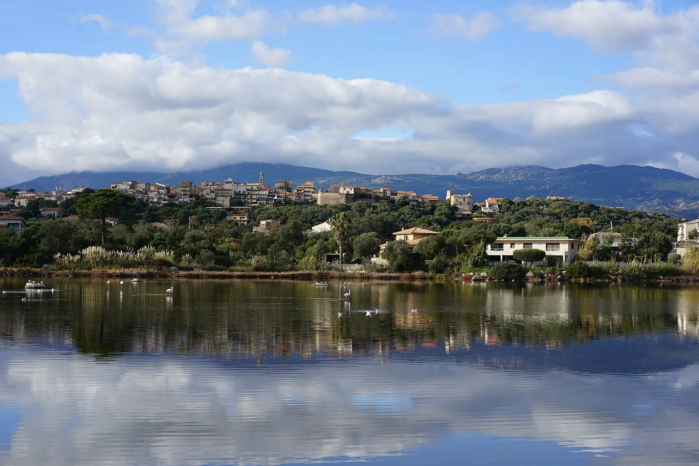
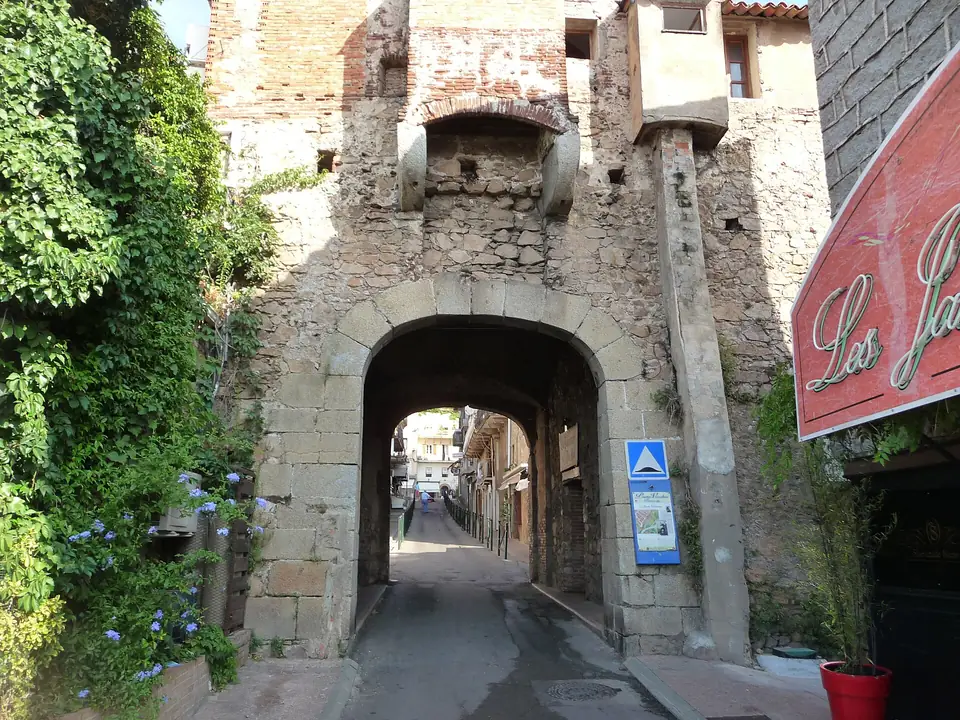
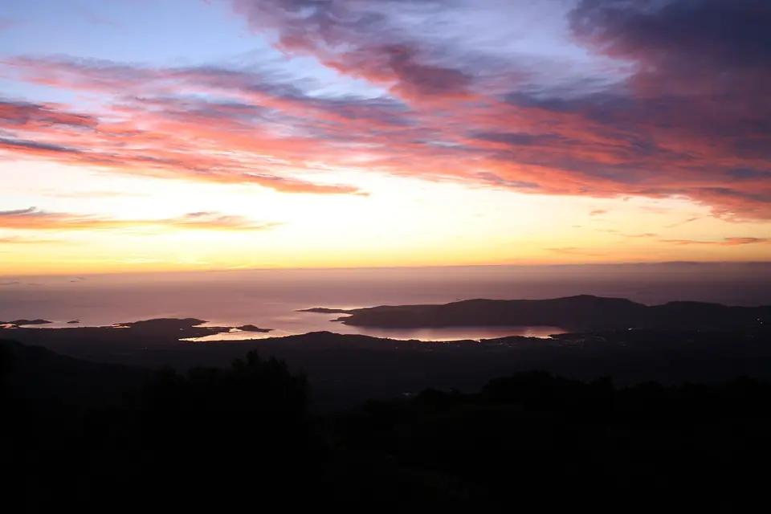
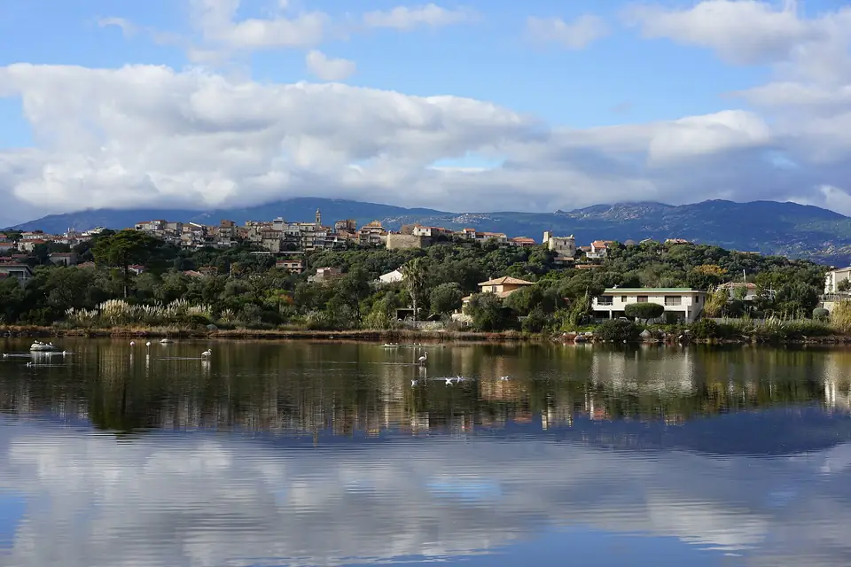
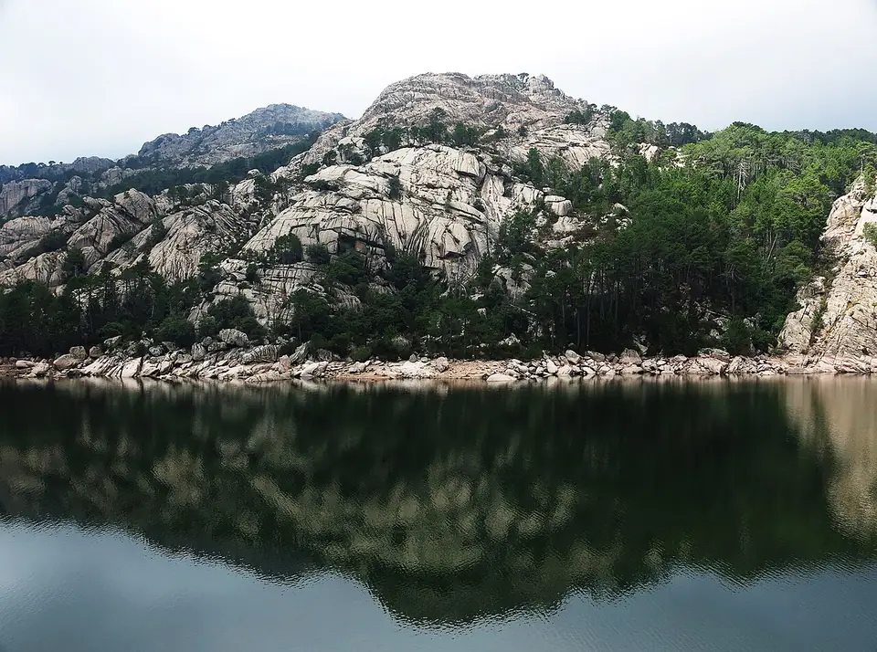
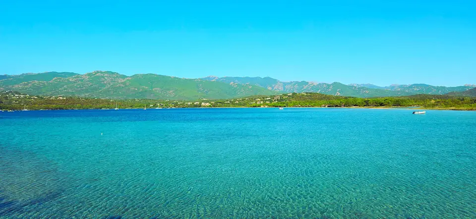
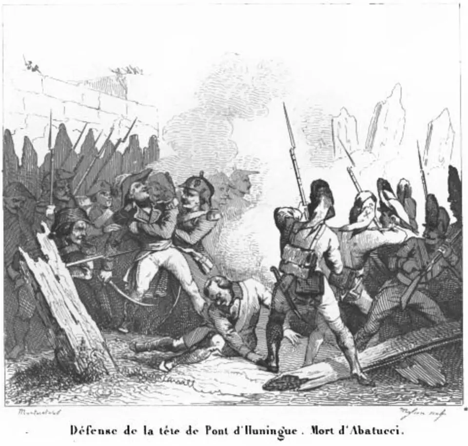

Porto-Vecchio · Corse-du-Sud
Portivechju
Lettre à ceux qui reviennent
Aux Rocca Serra et aux Abbatucci, et à tous ceux qui en descendent
Portivechju vu des salines — Annacquaghjolu, CC0

Chapitre I · La lettre
À vous qui revenez
Vous qui portez l’un de ces noms, ou qui n’en gardez qu’un écho — une inflexion dans la voix d’une grand-mère, un mot corse resté au fond d’une phrase française —, cette lettre est pour vous.
Je ne sais pas d’où vous la lisez. D’une ville du continent, peut-être, d’un autre pays, d’une autre langue. Cela n’a guère d’importance. Ici, personne ne vous demandera d’où vous venez ; on vous demandera seulement si vous avez fait bon voyage.
Fermez les yeux un instant. Il y a d’abord l’odeur : le maquis chauffé par le jour, le myrte, le ciste, l’immortelle, cette amertume douce qui reste dans les vêtements longtemps après le départ. Puis le sel sur les lèvres. Puis le granit, encore tiède sous la paume, quand le soir descend sur la vieille ville.
C’est là que je voudrais vous conduire : à Portivechju, le « port vieux » — un nom qui sonne déjà comme un retour. Non pour vous montrer un paysage ; vous en avez vu d’autres, et de plus vastes. Mais pour vous rendre ce qui vous appartient déjà : une mer, une montagne, et deux lignées corses qui, chacune à sa manière, ont tenu à cette île comme on tient une promesse.
Lisez lentement. L’île n’a jamais été pressée : elle sait que l’on revient toujours.
Chapitre II
1539 La citadelle
Avant la ville, il y eut la plaine — et la fièvre.
Une plaine fertile, et pourtant désertée : au Moyen Âge, la malaria y régnait comme une saison qui ne finit jamais. Du XIIIe au XVIe siècle, les seigneurs de la Rocca tenaient la contrée ; seuls les bergers de la montagne y descendaient l’hiver, avec leurs troupeaux.
Puis la seigneurie de la Rocca passa sous l’administration de l’Office de Saint-Georges, à Gênes. En 1539, les Génois fondèrent ici une colonie et une forteresse, pour se garder des Barbaresques.
Cinq bastions, une porte. La citadelle fut détruite, relevée, détruite encore ; les murs que vous toucherez datent de 1589. Le Bastion de France et la Porte génoise sont toujours debout, et la pierre, sous la main, garde la tiédeur des siècles.




La colonie, pourtant, échoua d’abord. La malaria, les corsaires, l’hostilité du pays eurent raison des premiers venus.
Alors Gênes se tourna vers la montagne. Elle favorisa l’installation de familles venues d’en haut — de Quenza, essentiellement. Au XVIIe siècle, la ville était peuplée de montagnards ; et pendant des générations, chaque été, ils remontaient vers les hauteurs pour fuir le paludisme.
Retenez cela, c’est le premier secret de Portivechju : elle est née d’un va-et-vient. On y descend de la montagne, on y remonte, on y revient.

Chapitre III · Interlude
1769 Le départ de Paoli
13 juin 1769
La bataille de Ponte Novu est perdue.
Pasquale Paoli s’embarque à Porto-Vecchio sur un navire anglais, avec quelque trois cents fidèles. Livourne d’abord ; puis l’exil.
On imagine le golfe, ce jour-là, immobile comme une pierre. On imagine les visages tournés vers le large, et cette côte qui s’éloigne sans qu’on puisse la retenir.
Selon la tradition familiale des Abbatucci, Jacques Pierre Abbatucci, qui avait couvert la retraite de Paoli, l’aurait escorté jusqu’ici.
Une statue de Paoli se dresse aujourd’hui sur la Marine. Chaque 13 juin, une cérémonie rappelle ce départ — car ici, même les adieux finissent par devenir des rendez-vous.
Lever de soleil sur la baie de Porto-Vecchio — marsupilami51, CC BY 3.0
Chapitre IV
Le sel
On l’appelle « la cité du sel ».


Au pied de la vieille ville, les marais salants couvrent une dizaine d’hectares. Entre 1795 et 1815, ils ont donné quelque mille tonnes de sel par an : mille tonnes de lumière arrachée à la mer, année après année.
Aujourd’hui, les salines sont à l’abandon. Mais l’eau y demeure, et elle a gardé son plus beau talent : depuis les marais du Stabiacciu, elle tend à la vieille ville son propre visage. C’est l’une des vues les plus célèbres de Portivechju — celle, peut-être, que l’on emporte en partant, et qui fait revenir.
Le sel conserve. C’est son plus vieil office : empêcher que les choses se perdent. Peut-être est-ce pour cela que cette ville garde si bien ce qu’on lui confie.
Chapitre V
Le liège
Il est un arbre qui se laisse dévêtir sans mourir.
On appelle cela le démasclage. Quand on lui ôte son écorce, le chêne-liège découvre un tronc rouge-orangé, couleur de braise, couleur de tuile — et l’on dirait que l’arbre rougit d’être vu.
À partir du milieu du XIXe siècle, le liège devient une industrie : des industriels varois, puis catalans, viennent l’exploiter. En 1876, l’usine Saint-Joseph est fondée sur la Marine. On y fabrique des bouchons, des flotteurs pour les filets de pêche, des isolants — tout ce qui flotte, tout ce qui protège, tout ce qui garde.


En 1975, l’usine ferme ses portes : le plastique a gagné. Mais les murs n’ont pas voulu se taire. L’ancienne usine abrite aujourd’hui une compagnie de théâtre, I Chjachjaroni — et il y a quelque justice à ce qu’un lieu qui fabriquait des bouchons serve désormais à libérer des voix.
Chapitre VI
La montagne : l’Ospédale
Levez les yeux. Au-dessus de la ville, la montagne veille.
C’est l’Ospédale — U Spidali —, un village et une forêt accrochés au granit, où les pins laricio se mêlent aux hêtres. Plus haut encore, la Punta di a Vacca Morta, à 1 312 mètres, domine toute la commune.
Ici, l’air change de langue. Le sel s’efface, la résine prend le relais ; et le golfe, tout en bas, n’est plus qu’une lame d’argent posée sur la plaine.



En 1979, on a retenu l’eau de la montagne dans un lac de barrage, vers 945 mètres d’altitude ; c’est lui qui alimente aujourd’hui la région. En aval, l’eau reprend sa liberté et se jette du haut du granit : c’est la cascade de Piscia di Ghjaddu, que l’on appelle aussi Piscia di Gallu.
Ainsi, l’eau que l’on boit au bord de la mer est d’abord descendue de la montagne. Tout le pays tient dans ce trajet.
L’acqua và à u mare.
L’eau va à la mer.
Chapitre VII
La mer
Et puis il y a la mer.

Palombaggia, Santa Giulia, Cala Rossa : prononcez ces noms à voix haute, ils ont déjà le bruit de l’eau sur le sable.
Le golfe s’ouvre sur la mer Tyrrhénienne comme une main qui se desserre. L’eau y passe du turquoise au vert de verre, puis au bleu profond ; et sur les rochers, le soir allume des couleurs de braise.
Depuis les années 1980, la troisième ville de Corse est devenue un grand centre touristique, et l’on comprend pourquoi. Mais vous, vous ne venez pas voir cette mer : vous venez la retrouver. Ce n’est pas tout à fait la même chose.


Chapitre VIII
Le crépuscule sur la vieille ville
À l’heure où le soleil quitte le golfe, la vieille ville prend la couleur de l’ocre.

Montez par les ruelles. La pierre rend lentement la chaleur qu’elle a bue tout le jour ; les volets se rouvrent, les voix passent d’une fenêtre à l’autre, en corse, en français, parfois dans la même phrase.
Dans la vieille ville se dresse l’église Saint-Jean-Baptiste. C’est sur sa place que l’on fête, la nuit du 31 juillet au 1er août, Luddareddu : un mannequin de paille et de liège, qui figure le mois de juillet, y est jugé, puis brûlé.
Juillet part en fumée ; août peut commencer. Il y a dans ce rite une sagesse simple : on ne retient pas l’été. On le juge, on le remercie, et on le laisse partir.
Restez jusqu’à la nuit. Le ciel passe du rose au violet, puis à ce bleu d’encre qui semble n’exister qu’au-dessus des îles.


Chapitre IX
La langue
Il y a des mots qu’on n’apprend pas : on les reçoit.
- a casa
- la maison
- u paese
- le village
- a machja
- le maquis
- u mare
- la mer
- l’isula
- l’île
- Pace è salute
- paix et santé — on se salue ainsi, on trinque ainsi
Dites-les lentement. Chacun ouvre une porte.
Chì và è volta, bon viaghju face.
Celui qui part et revient a fait un bon voyage.
A casa piglia, a casa rende.
La maison rend toujours ce qu’elle prend.
Hè megliu ghjente cà arghjentu.
Mieux vaut des siens que de l’argent.
L’acqua và à u mare.
L’eau va à la mer.
Et puis il y a le chant. Dio vi salvi Regina est un cantique marial ; la Consulta d’Orezza l’adopta en 1735, et il est devenu l’hymne de la Corse. Quand il s’élève, on ne sait plus très bien si l’on prie ou si l’on prête serment.
Dio vi salvi Regina
E Madre universale
Per cui favor si sale
Al Paradiso.
Que Dieu vous garde, Reine
et Mère universelle
par la grâce de qui l’on monte
jusqu’au Paradis.
Ciste en fleurs, le maquis — Pierre Bona, CC BY-SA 3.0 · Proverbes : Wiktionnaire
Chapitre X
Les Rocca Serra la lignée de la mer
La première lignée regarde la mer. Les Rocca Serra sont une famille noble corse, maintenue noble en 1772 sur des preuves de 1556, et qui revendique une ascendance della Rocca. Leur histoire a jeté l’ancre dans la région de Porto-Vecchio, et ne l’a plus levée.
Leurs armes portent une tour, et une aigle de sable tenant une balance. La pierre qui tient bon, la justice qui pèse : on ne saurait mieux dire ce que l’on attend de ceux qui veillent sur une ville.
-
XVIe siècle
Serra-di-Scopamène
Alta Rocca
Dans la montagne de l’Alta Rocca, la descendance de Giovan Paolo della Rocca prend le nom de « della Serra », puis celui de « Rocca Serra ».
-
14 janvier 1772
La branche de Porto-Vecchio
Un arrêt confirme notamment la noblesse de la branche de Porto-Vecchio.
-
1803
La mairie
Vincente Maria Rocca Serra devient maire de Porto-Vecchio. D’autres suivront :
- Vincente Maria Rocca Serra1803–1814
- Anton « Camillo » Rocca Serra1821–1826
- Leopoldo1839–1845
- Giulio Maria1848–1854
- Horace de Rocca Serra1872–1876
- …
Selon Wikipédia, la famille a occupé presque sans interruption la mairie de Porto-Vecchio du Premier Empire à nos jours.
-
1880 – 1963
Camille de Rocca Serra
« u sgiò Cameddu »
Médecin. Maire de Porto-Vecchio de 1922 à 1943, député de la Corse, président du Conseil général de la Corse. C’est ainsi qu’on l’appelait, d’un nom qui tient à la fois du respect et de la tendresse.
-
1911 – 1998
Jean-Paul de Rocca Serra
Fils de Camille
Né à Bonifacio, médecin lui aussi. Maire de Porto-Vecchio de 1950 à 1997 : quarante-sept ans. Sénateur, puis député de la Corse et de la Corse-du-Sud (1962-1998), président de l’Assemblée de Corse.
Les marécages avaient été asséchés au XIXe siècle, la plaine assainie après la Seconde Guerre mondiale ; c’est sous son administration que la ville prend son essor. Un lycée de Porto-Vecchio porte aujourd’hui son nom.
-
né en 1954
Camille de Rocca Serra
Fils de Jean-Paul
Maire de Porto-Vecchio de 1997 à 2004, député de la Corse-du-Sud depuis 2002, président de l’Assemblée de Corse.
Autre membre de la famille : Louis-Ferdinand de Rocca Serra (1936-2021), sénateur de la Corse-du-Sud.
Une lignée de la mer, donc : celle qui, deux siècles durant, a veillé sur le port.

Chapitre XI
Les Abbatucci la lignée de la montagne
L’autre lignée descend de la montagne. Les Abbatucci sont originaires de Zicavo, dans le Haut-Taravo, au pied du Monte Incudine et du plateau du Coscione — là-haut, où l’herbe est rase, le vent constant, et le ciel si proche qu’on croirait le toucher. C’est l’une des grandes familles de Corse.
-
1723 – 1813
Jacques Pierre Abbatucci
« Le vieux général »
Né à Zicavo, mort à Zicavo. Docteur en médecine à Padoue, en 1746. Général de la nation corse dans le Sud, il bat les Français à Borgo en 1768.
Après Ponte Novu, il couvre la retraite de Paoli ; et, selon la tradition familiale — des sources manuscrites que cite Wikipédia —, il l’escorte jusqu’à Porto-Vecchio en 1769. Il sera plus tard général de division de la Révolution.

Jacques Pierre Abbatucci Galletti · Domaine public -
1770 – 1796
Jean-Charles Abbatucci
Fils du vieux général
Général de la Révolution. Il est tué à vingt-six ans en défendant la tête de pont de Huningue. Ses derniers mots, rapporte-t-on, furent : « Pour la patrie ». Son nom est inscrit sous l’Arc de triomphe.

Jean-Charles Abbatucci Auteur inconnu · Domaine public 
Défense de la tête de pont de Huningue — mort d’Abbatucci, 1796 Auteur inconnu · Domaine public -
1791 – 1857
Jacques-Pierre-Charles Abbatucci
Petit-fils du vieux général
Né à Zicavo. Garde des Sceaux, ministre de la Justice de Napoléon III de 1852 à 1857.
-
1821 – 1888
Séverin Abbatucci
Maire de Zicavo et député de la Corse.
Une lignée de la montagne : de celles qui savent que la pente se gravit lentement, et qu’on ne redescend jamais tout à fait le même.
Plateau du Coscione au coucher du soleil (Zicavo) — Rémih, CC BY-SA 4.0
Chapitre XII
Deux lignées, une île
Il faut être honnête avec ceux qu’on aime.
l’hiver, les bergers descendentl’été, les montagnards remontent
Rien, dans les sources que nous avons lues, ne relie ces deux familles. Cette lettre ne leur inventera pas d’alliance ; elle dit seulement qu’il existe deux lignées corses, l’une de la mer, l’autre de la montagne.
Mais entre la mer et la montagne, il y a un chemin, et ce chemin est bien réel. C’est celui de la transhumance, que les bergers prenaient l’hiver pour descendre vers la plaine avec leurs troupeaux. C’est celui des familles de Quenza venues peupler la ville génoise, et qui le remontaient chaque été pour fuir la fièvre. Pendant des siècles, dans ce pays, la montagne et la mer ont respiré au même rythme : descendre, remonter, revenir.
Il y a aussi ce jour de juin 1769 où, selon la tradition des Abbatucci, un homme de Zicavo accompagna Paoli jusqu’au port de Porto-Vecchio. C’est le seul endroit où l’histoire de la montagne et celle du port se touchent — et encore : du bout des doigts, sur la foi d’un souvenir de famille.
Le reste se passe en vous. Que vous descendiez de l’une ou de l’autre, vous êtes ce lieu où la montagne rejoint la mer.

Envoi
Un jour, vous reviendrez.
Peut-être par la mer, quand le golfe s’ouvre devant l’étrave. Peut-être par la montagne, en descendant de l’Ospédale, quand la ville apparaît tout en bas, posée sur son reflet de sel.
Vous ne reconnaîtrez rien, et tout vous reconnaîtra.
Le maquis aura la même odeur. Le granit sera aussi tiède. Quelqu’un, sur une place, lèvera son verre en disant Pace è salute, et vous saurez quoi répondre.
Car la maison n’oublie rien : a casa piglia, a casa rende — la maison rend toujours ce qu’elle prend.
Ici commence toujours le retour.
Chì và è volta, bon viaghju face.
Celui qui part et revient a fait un bon voyage.
Pace è salute
Voie lactée sur les rochers de Corse — Jérémy Sauterel, CC BY 2.0